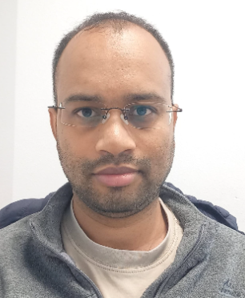

|  |
Shashank Shekhar (शशांक शेखर)
Ph.D., Postdoctoral Research Associate
Current Interests: Human-Robot Collaboration & Interaction, (Collaborative) Multi-Agent Systems, Planning and Decision Making under Uncertainty
LAAS-CNRS (in Robotics and InteractionS (RIS) team)
7, avenue du Colonel Roche BP 54200
31031 Toulouse cedex 4, France
|
Email: first-name dot last-name at laas dot fr
Phone: (M) +33 6 52 60 38 83 (WhatsApp: +972 5 86 30 42 78)
DBLP
Google Scholar
CV
Linkedin
Twitter
|
Relying on a single agent system that is managed by an entity and has access to all data is impractical in real-world situations.
It is crucial to promote both uniqueness and teamwork in order to accomplish successful partnership.
My research focuses on tackling problems that require a meaningful integration of perspectives,
problem-solving skills, and knowledge representation and reasoning from various agents or organizations.
This is done through studying planning and decision-making for multi-agent systems.
Taking on complex problems that are beyond the scope of one organization is the goal.
Bio
I joined LAAS-CNRS as a researcher in human-robot collaboration and (multi-robot) task planning.
I am a part of the Robotics and InteractionS (RIS) research team, working with
Dr. Rachid Alami.
In general, I am interested in automated planning, decision-making under uncertainty, multi-agent systems, human-robot collaboration and interaction,
heuristic search, and their real-world applications.
Apart from that, I am also interested in expanding my expertise in multi-agent planning/pathfinding problems under temporal and spatial uncertainty and their applications.
Previously, I was a postdoctoral fellow (for half a year) in The Department of Computer Science,
Ben-Gurion University of the Negev, Beer-Sheva, Israel,
working with Professor Ronen I. Brafman
(Fellow of AAAI and
EurAI).
Prior to that, I received my Ph.D. in Computer Science from this university.
I was very fortunate to be advised by Professor Brafman.
The focus of my Ph.D. thesis - Collaborative Multi-agent Planning with Partial Observability and Interacting Actions
(pdf) was on devising plausible frameworks and algorithms for solving collaborative multi-agent planning problems with interacting actions.
I received my M.S. (by research) in artificial intelligence planning, heuristic search, and learning
(my master's thesis - Learning and strengthening meta-heuristics in plan-space planning (pdf))
from Department of Computer Science & Engineering,
Indian Institute of Technology Madras (IIT Madras), India, advised by
Professor Deepak Khemani.
I received my Bachelor of Technology (B.Tech.) (with distinction) in 2011 from Guru Gobind Singh Indraprastha University, New Delhi.
I joined Infosys Ltd. as a software engineer after my bachelor's and later quit my job to join IITM.
Newsworthy
- 2024/05: A paper was accepted at HAXP 2024 (the ICAPS workshop), titled - Human-Aware Epistemic Task Planning for Human-Robot Collaboration
- 2023/08: SGAI 2023 has accepted our paper titled - A knowledge rich task planning framework for human-robot collaboration
- 2023/06: (Best student paper - honourable mention) A paper was accepted at RO-MAN 2023, titled - Models and Algorithms for Human-Aware Task Planning with Integrated Theory of Mind.
- 2023/05: A paper was accepted at PlanRob 2023 (the ICAPS workshop), titled - Anticipating False Beliefs and Planning Pertinent Reactions in Human-Aware Task Planning with Models of Theory of Mind.
- 2021/10: LAAS-CNRS: Gave my first research seminar on collaborative MAP with partial observability concerning human-robot teaming (human-aware planning).
- 2021/07: Ph.D. thesis: I got all the reviews (I submitted my thesis in March 2021), and in summary, the reviewers found that my work makes some very important contributions to AI (basically towards collaborative multi-agent planning under uncertainty). (To achieve your dreams, work is required. Suffering is optional. -- Jack Canfield)
Research
At present, I am working on the following topics:
- Human-AI/Robot Collaboration
-
(Planning with Human in The Loop & Human-Aware Collaborative Planning)
For a (centralized/distributed) planning framework to decide to act in the presence of (or along with) humans to achieve a (shared) task,
it needs to estimate human cooperation by anticipating and emulating humans' possible decisions, actions, and reactions.
Although humans can be considered rational and congruent agents, autonomy cannot always be sure about their next 'moves' upfront,
as well as the evolution of their mental state as the task execution progresses.
Hence, effectively collaborating with them requires planning under uncertainty about multiple factors like
the reactions or behaviors of the human agents and various mental models held by them and the environment.
In this direction (currently):
- We focus on formalizing the HATP/EHDA framework that is still in its early stage of development, dealing with human-robot interaction/collaboration.
- We are also motivated to generalize it while adapting MA-STRIPS/MA-PDDL frameworks and studying its properties.
- Our focus is also on defining novel relevant metrics and designing new heuristics and online algorithms for building fast, real-time systems.
- Multi-Agent Planning
-
Multi-Agent Planning (MAP) under uncertainty in the collaborative setting is a notoriously difficult problem.
Often, they are modeled as Dec-POMDPs or its qualitative variant, QDec-POMDPs, a multi-agent contingent planning formalism.
Solving Dec-POMDPs optimally is a combinatorially hard problem
(
NEXP-hard),
and the qualitative model is also no easier in the worst-case but it scales better due to its non-probabilistic structure, at least when the actions are deterministic.
The state-of-the-art QDec-POMDP algorithms, QDec-FP/S (presented at ICAPS'19 & AAAI'21, respectively), are based on factored planning (developed originally for classical planning) and scale much better than the recently proposed Iterative MAP algorithm.
We focus on enhancing the QDec-FP/S planners, enriching the existing benchmarks, and modeling a more complex class of MAP problems under partial observability and uncertainty.
We also focus on developing new techniques (e.g., factored planning-based approaches) for even better scalability and to push the state-of-the-art further.
Publications
Journal Publications
Conference Publications
- Shashank Shekhar, Anthony Favier, Rachid Alami, and Madalina Croitoru,
A Knowledge Rich Task Planning Framework for Human-Robot Collaboration.
SGAI 2023 (short paper).
- Anthony Favier, Shashank Shekhar, and Rachid Alami,
Models and Algorithms for Human-Aware Task Planning with Integrated Theory of Mind.
RO-MAN 2023.
- Alexander Kovalchuk, Shashank Shekhar, and Ronen Brafman,
Verifying Plans and Scripts for Robotics Tasks Using Performance Level Profiles. ICAPS 2021. (talk)
- Shashank Shekhar, Ronen I. Brafman, and Guy Shani,
Improved Knowledge Modeling and Its use for Signaling in Multi-Agent Planning under Partial Observability. AAAI 2021.
- Shashank Shekhar, Ronen I. Brafman, and Guy Shani,
A Factored Approach to Deterministic Contingent Multi-Agent Planning. ICAPS 2019. (talk (@21:40))
- Shashank Shekhar and Ronen I. Brafman,
Representing and planning with interacting actions and privacy. ICAPS 2018. (talk)
- Shashank Shekhar and Deepak Khemani,
Learning and tuning meta-heuristics in plan space planning. (arXiv 2016).
- Shashank Shekhar and Deepak Khemani,
Improving Heuristics On-the-fly for Effective Search in Plan Space. KI 2015.
- Shashank Shekhar and Deepak Khemani,
Extending and Tuning Heuristics for a Partial Order Causal Link Planner. MIKE 2015.
Workshop/Symposium Publications
- Shashank Shekhar, Anthony Favier, and Rachid Alami,
Human-Aware Epistemic Task Planning for Human-Robot Collaboration.
at HAXP 2024, the ICAPS workshop (paper).
- Anthony Favier, Shashank Shekhar, and Rachid Alami,
Anticipating False Beliefs and Planning Pertinent Reactions in Human-Aware Task Planning with Models of Theory of Mind.
PlanRob 2023, the ICAPS workshop (pdf).
- Anthony Favier, Shashank Shekhar, and Rachid Alami,
Robust Planning for Human-Robot Joint Tasks with Explicit Reasoning on Human Mental State.
AAAI Fall Symposium Series (FSS) 2022.
- Shashank Shekhar, Ronen I. Brafman, and Guy Shani,
Signaling in Contingent Multi-Agent Planning. EpiP'20 Workshop, ICAPS 2020.
(talk)
- Or Wertheim, Ronen I. Brafman, Shashank Shekhar, Tal Feiner, and Igal Pinsky,
ROS-POMDP – A Platform for Robotics Planning using PLPs and RDDL in ROS. PlanRob'20 Workshop, ICAPS 2020.
- Tomer Shahar, Shashank Shekhar, Dor Atzmon, Abdallah Saffidine, Brendan Juba, and Roni Stern,
Safe Multi-Agent Pathfinding with Time Uncertainty. WoMAPF'20 Workshop, IJCAI 2020.
Professional Activities and Talks
Activities
- Reviewer - International Journal of Social Robotics (SORO) 2024
- I am serving on the ECAI-2024 Program Committee
- Reviewer - the IEEE International Conference on Robotics and Automation (ICRA) 2024.
- Reviewer - the IEEE Robotics and Automation Letters journal (2022, 2023, 2024)
- Reviewer - the Springer Nature journal for CS (2022)
- I served on the Program Committee of
AAAI 2021 and
AAAI 2022.
- I co-organized the Workshop on
Distributed and Multi-Agent Planning at
ICAPS 2020. I also served on the Program Committee.
Talks
- [2019/10] - I delivered a talk on A Factored Approach to Contingent Multi-Agent Planning with Deterministic Actions at IIT Madras.
- [2018/09] - I delivered a talk on Representation and Planning with Interacting Actions and Privacy at IIT Madras, IBM IRL (Delhi), and IIT Mandi.
Miscellaneous
Personal
Music, Movies, Photos etc.